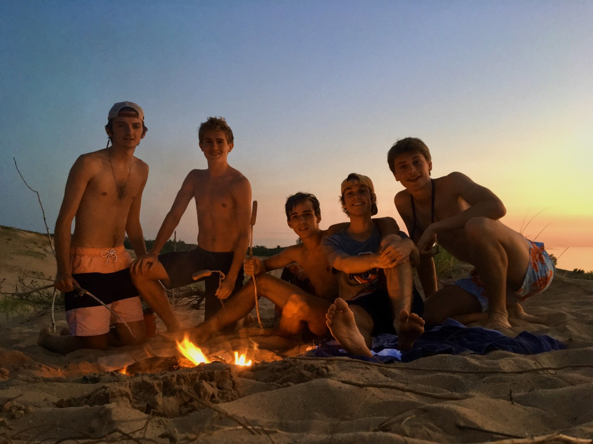
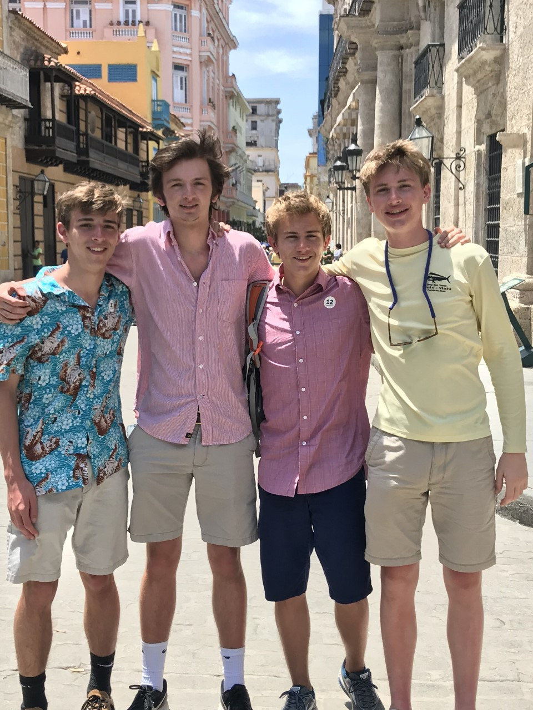
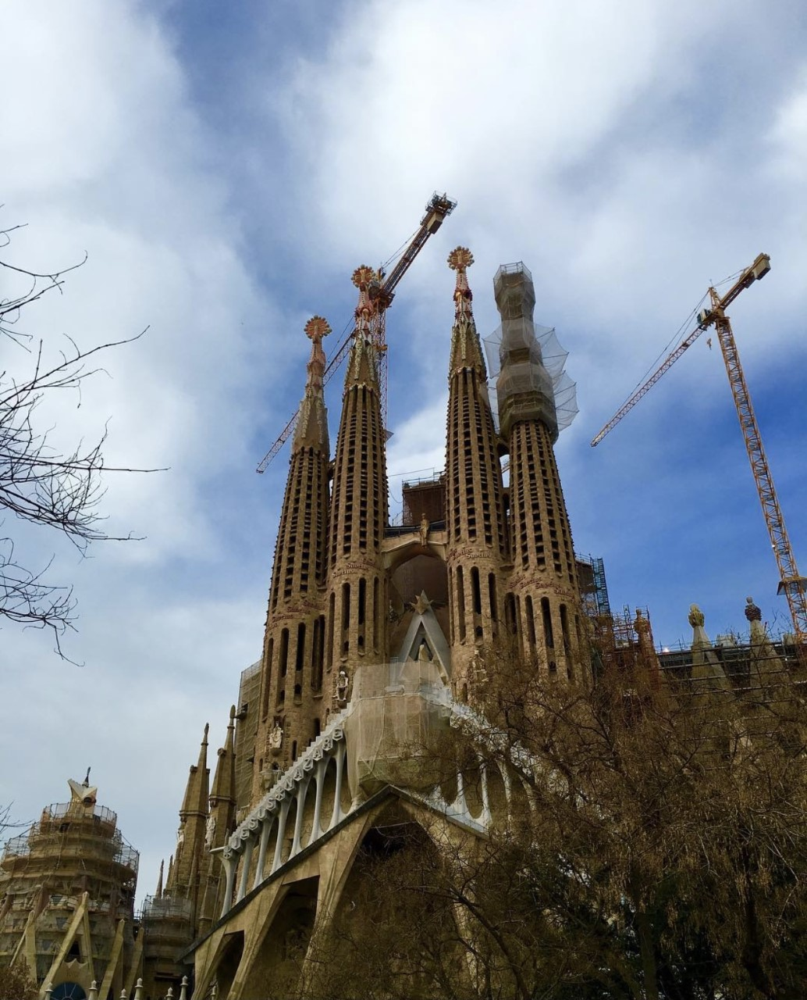
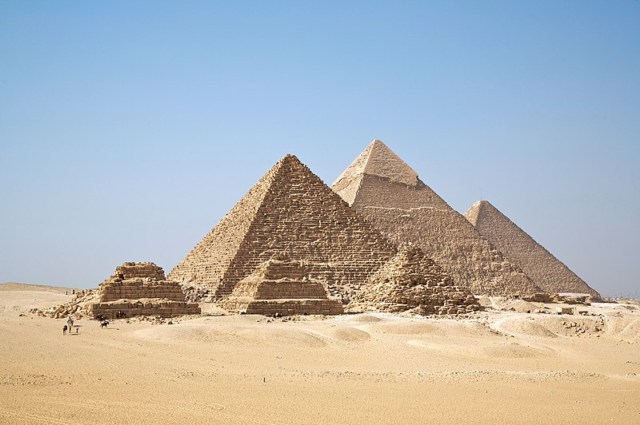

Who Am I?
My name is Jonathan Stansbury and I'm 21 years old. I was born in Scottsdale, Arizona but spent my childhood growing up in Cincinnati, Ohio. In middle school I discovered a passion for running that led me to attend St. Xavier High School, an all-male, Catholic, college preparatory school known to have a prestigious running program. It was at this school that I made friends who would change my life forever.
What Do I Love?
My friends mean everything to me. In my free-time I like to travel with them and spend time in the outdoors. There is something about creating memories while in the outdoors that brings me great joy. My friends and I made a promise to each other during our senior year of high school that no matter what different directions we go in life that we will take a trip together every year for the rest of our lives.
My friends, Michael Holly, Peter Dauenhauer, Jack Brinker, Jack Hands, & me camping out on a sand dune overlooking Lake Michigan during the summer of 2018. Our first annual trip together.
My Travels
Top 3 favorite places I've visited:
- Kauai, Hawaii, USA
- Havana, Cuba
- Barcelona, Spain
Kauai is one of the most naturally beautiful places I have ever been. It is a lush green island with so much to see and do. There are hidden beaches where dolphins, sea turtles, and even whales can be spotted swimming just off the shoreline. Chickens roam around the island freely and the sun shines bright almost every day. Kauai is also home to the Na Pali Coast, which boasts one of the most stunning coastline views in the world.

The history and vibrant culture on display in Havana is spectacular. Hundreds of classic cars can be seen driving down the roads every day, oftentimes surrounded on both sides by brightly painted buildings. Much of the architecture in Havana is old but is just stunning. Visiting feels like stepping back 50 years in time and visiting a Spanish-speaking coastal community.

Barcelona is incredible. Because of its location between the Pyrenees mountains and the Mediterrenean Sea, if you're in Barcelona during the Spring and the weather is just right, you might be able to go skiing in the morning and hit the beach in the afternoon. Barcelona is full of things to do and has a lot of interesting history to discover as well.
Top 3 places I want to visit:
- The Great Pyramids, Giza, Egypt
- Torres del Paine National Park, Chile
- Machu Picchu, Cusco, Perú

My Bucketlist
15 random goals from my bucketlist:
- Ski the Swiss Alps
- Cage dive with great white sharks
- Get my private pilot's license
- Start a tech company
- Run the Boston Marathon
- Climb Mount Everest
- Catch a mahi mahi while deep sea fishing
- Buy a house on the beach
- Swim with whale sharks
- Go on an African safari
- Kayak in Antarctica
- Go skydiving
- Go backpacking in Banff, Alberta, Canada
- See Earth from space
- Write a book